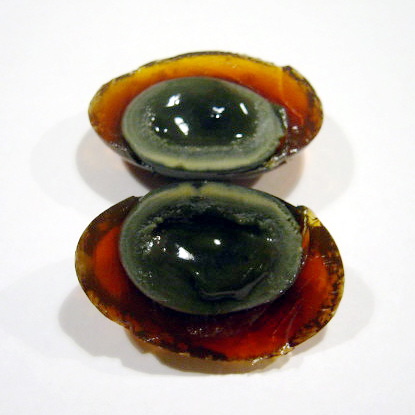

Century Egg Recipe

Description
Whether you call them century eggs, hundred-year eggs, millennium eggs or whatever,
these outlandish ova are a Chinese delicacy dating back centuries to the Ming Dynasty.
The boastful name suggests these eggs take forever to make, this is a misnomer.
Century eggs take about 4-5 weeks to make, a few minutes to work up the courage to open,
and a few seconds to eat.
Ingredients
- 100% lye/caustic soda
- Salt
- Chicken Egg
Steps
-
Obtain the Following:
- Scale
- Plastic Wrap
- Clay
- Glass Jar
- On a scale weigh out the lye and salt. Over low heat dissolve the salt and lye completely in water. Bring the solution to a boil and allow it to cool down before use.
Place raw eggs into glass jar and pour the cooled pickling solution over eggs. Ensure all eggs are completely submerged.
-
Leave eggs at 15-20°C (60-70°F) for about 10 days. Keep an eye on them to ensure they don't pop up above the solution and stay submerged
- After about 10 days it's time to remove the eggs. Carefully pour out brine and pick out eggs, rinse with water then towel dry. The shells should still be hard.
- Traditionally century eggs were rolled in mud then wrapped in rice husks and buried for a few more weeks. In this modern version I simply wrapped the eggs in several layers of clear plastic wrap then encased in modeling clay. This inhibits oxygen from reaching the eggs while they cure.
-
After about a month from the when the eggs were first put into the brine solution it's time to open them up. Carefully remove the clay encasement and the plastic wrap, then tap the egg to break the shell and gently peel away. The eggs should be completely transformed!
- Century eggs are typically served mashed up in soupy rice. I made a steamy bowl and served it to my friends.
Go Back